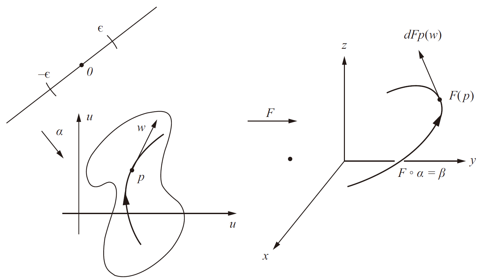
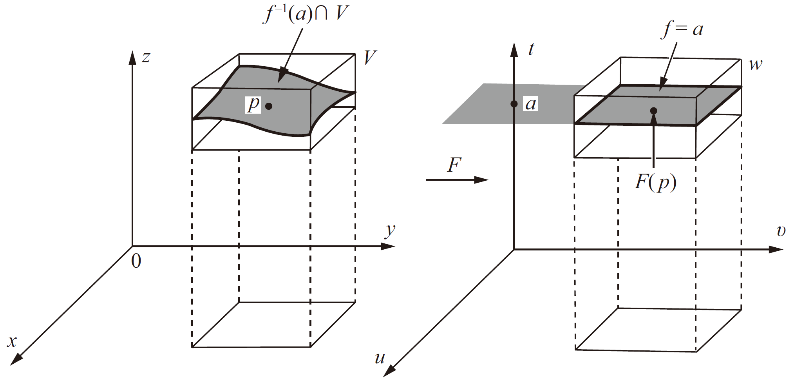
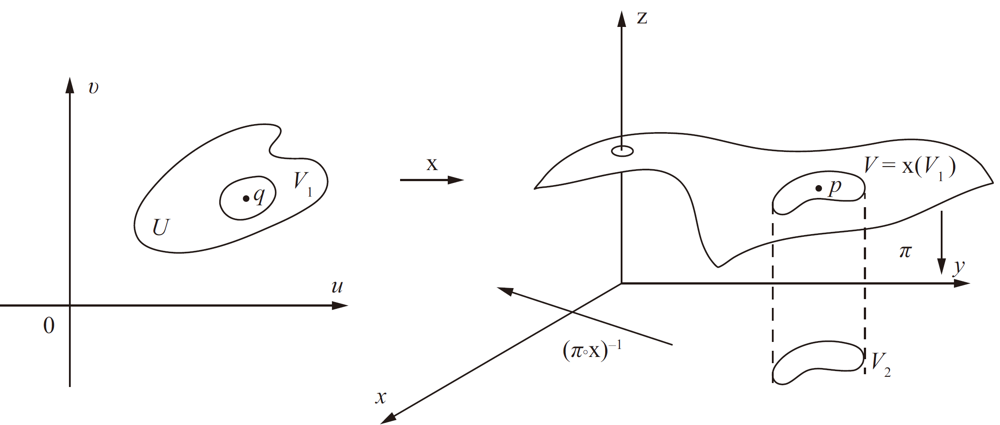
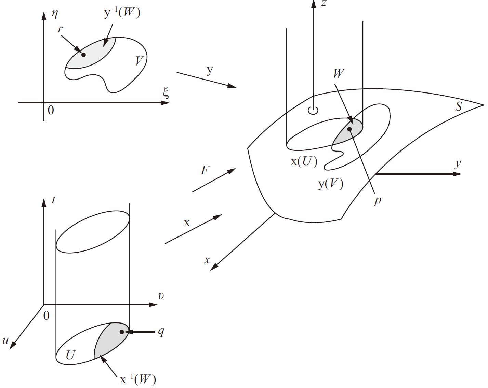
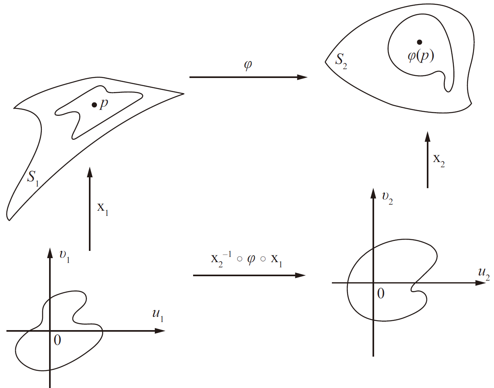
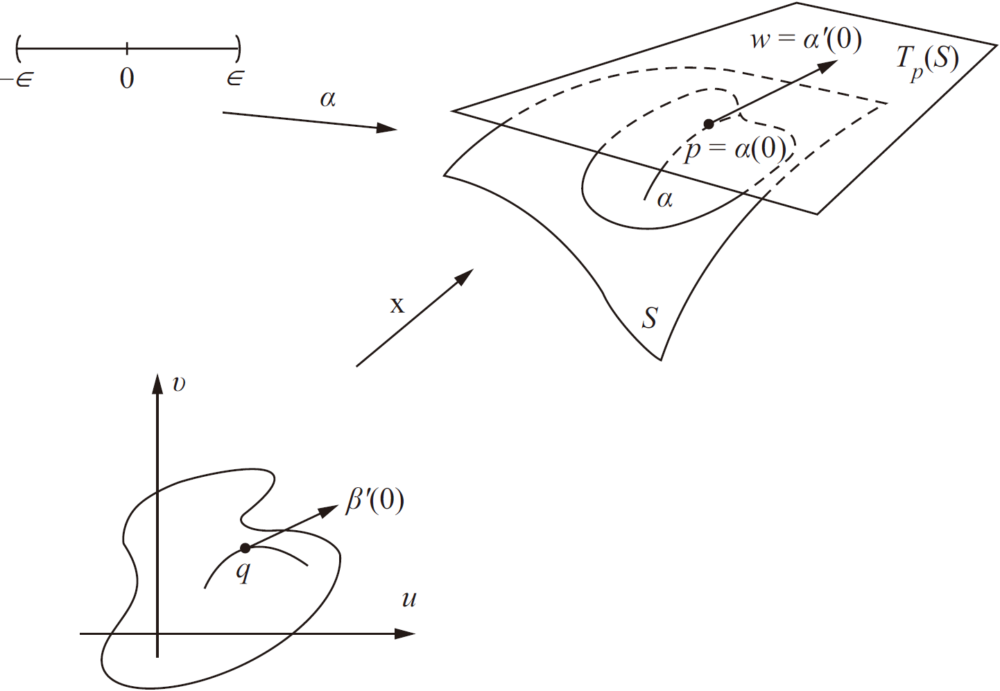

Surfaces¶
Regular surfaces¶
Before stepping into the definition of regular curves, we have to define a differential of a map.
Definition of a differential of a map
Let \(F: U\subset \mathbb{E}^n\rightarrow \mathbb{E}^m\) be a differentiable map, i.e. each component function has continuous partial derivatives w.r.t each variable. \(p\in U\). A linear map \(dF_p: \mathbb{E}^n\rightarrow \mathbb{E}^m\) is called the differential of \(F\) at \(p\), and is defined as follows.

Let \(w\in \mathbb{E}^n\) and \(\alpha: (-\varepsilon, +\varepsilon)\rightarrow U\) is a differentiable curve such that \(\alpha(0)=p\), \(\alpha'(0)=w\). Then by chain rule, \(\beta=F\circ \alpha: (-\varepsilon, +\varepsilon)\rightarrow \mathbb{E}^m\) is also differentiable. Then
Differential of a map is independent of choice of curves
The above definition of \(dF_p\) does not depend on the choice of the curve which passes through \(p\) with tangent vector \(w\).
We porve the case when \(n=2, m=3\). Let \(\alpha(t)=(u(t), v(t))^T\), and \(F(u,v)=(x(u,v), y(u,v), z(u,v))^T\), then
which is a linear map.
Actually the above map has a matrix in canonical bases, which is usually called the Jacobian matrix.
defintion of regular surfaces
A subset \(S\subset \mathbb{E}^3\) is a regular surface if for each \(p\in S\), there exsits a neighborhood \(V\) in \(\mathbb{E}^3\) and a map \(\pmb{x}: U\rightarrow V\cap S\) of an open set \(U\in \mathbb{E}^2\) onto \(V\cap S\subset \mathbb{E}^3\) such that
(i) \(\pmb{x}\) is differentiable, i.e.
whose component functions have continuous partial derivatives of all orders in \(U\).
(ii) \(\pmb{x}\) is a homeomorphism.
(iii) regularity condition. For each \(q\in U\), the differential \(d\pmb{x}_q: \mathbb{E}^2\rightarrow \mathbb{E}^3\) is one-to-one.
Condition (i) is necessary if we want to do some geometric ananlysis on \(S\). The homeomorphism in Condition (ii) prevents the self-intersections in regular surfaces, otherwise it would induce ambiguous tangent plane at the intersection point. Consition (iii) guarantee the existence of a tangent plane at all points of \(S\). A more familiar form of condition (iii) is given as follows.
Interpretation of condition (iii)
Let us compute the matrix of the linear map \(d\pmb{x}_q\) in the canonical bases \(e_1, e_2\) of \(\mathbb{R}^2\) with coordinate \((u,v)\) and \(f_1, f_2, f_3\) of \(\mathbb{R}^3\) with coordinate \((x,y,z)\).
Let \(q=(u_0,v_0)\), then \(e_1=(1,0)\) is tangent to the curve \(u\mapsto (u, v_0)\) on \(\mathbb{R}^2\) whose image is \(u\mapsto (x(u,v_0), y(u, v_0), z(u,v_0))\) (This image curve is called the coordinate curve \(v=v_0\), or with ODE \(dv=0\)), which lies on \(S\) and has a tangent vector at \(\pmb{x}_q\)
Similarly, we have
So we could write the matrix of \(d\pmb{x}_q\)
condition (iii) requires the matrix to be full rank. Equivalently speaking, we need \(\frac{\partial \pmb{x}}{\partial u}\times \frac{\partial \pmb{x}}{\partial v}\neq 0\); or one of the minors of order \(2\) of the matrix of \(d\pmb{x}_q\), that is, one of the Jacobian determinants
does not vanish at \(q\).
Condition (iii) is also of great importance for \(\pmb{x}^{-1}\) to be a so-called differentiable function, that is, if we lift its range to three dimension, then the map is differentiable. Details could be found in Change of parameters.
Actually, it would be tiresome if we test all the three conditions one by one. The following theorems gives a cheaper method to the testing by utilizing the image of a multi-variable function.
Images¶
images implies regularity
If \(f:U\rightarrow \mathbb{E}\in C^1(U)\) where \(U\subset \mathbb{E}^2\) is an open set, then the graph of \(f\), viewed in \(\mathbb{E}^3\), i.e. the subset of \(\mathbb{E}^3\) given by \((x,y,f(x,y))\) for \((x,y)\in U\) is a regular surface.
Easy to show that condition (i) and (iii) are satisfied by taking derivatives and showing that \(\frac{\partial (x,y)}{\partial (u,v)}=1\). As for condition (ii), we only need to show that \(\pmb{x}^{-1}\) is continuous, which is obvious if we check it as a projection from \(\mathbb{E}^3\) onto \(\mathbb{E}^2\).
\(\square\)
Now we give some definitions about the following application.
regular point, critical point
Given a differentiable map \(F:U\subset \mathbb{E}^n\rightarrow \mathbb{E}^m\) where \(U\) is open, a point \(p\in U\) is called a critical point of \(F\) if the differential \(dF_p:\mathbb{E}^n\rightarrow \mathbb{E}^m\) is not a surjective mapping.
The image \(F(p)\in\mathbb{E}^m\) of a critical point is called the critical value of \(F\). A non-critical value of \(\mathbb{E}^m\) is called the regular value of \(F\).
The above terminology is inspired by a real-valued function of a real variable.
Now particularly we consider \(f:U\subset \mathbb{E}^3\rightarrow \mathbb{E}\), which takes \(m=1,n=3\). With a similar logic as we have in Interpretation of condition (iii), for canonical bases \(f_1,f_2,f_3\), we have the matrix form
In this case, \(df_p\) is not surjective at \(p\), iff \(f_x=f_y=f_z=0\) at \(p\).
From the above multi-variable function, we could find a regular surface.
regular surfaces by images
If \(f:U\subset \mathbb{E}^3\rightarrow \mathbb{E}\) is a differentiable function and \(a\in f(U)\) is a regular value of \(f\), then \(f^{-1}(a)\) is a regular surface in \(\mathbb{E}^3\).
Actually, this is a trick that we choose a plane in \(\mathbb{E}^3\) to find a regular surface. The image of \(f\) cooresponds to a image of another function \(h\) which could give an arbitrary regular surface.
Let \(p=(x_0,y_0,z_0)\) be a point of \(f^{-1}(a)\). Since \(a\) is a regular value of \(f\), we may assume without loss of generality that \(f_z\neq 0\) at \(p\). Then define a map like an image
and we indicate by \((u,v,t)\) the coordinates of a point in \(\mathbb{E}^3\) where \(F\) takes its values. The matrix of the differential map \(dF_p\) is given by
as we illustrated in special case for function on \(\mathbb{E}^3\). Whence \(det(dF_P)=f_z\neq 0\). We may apply the inverse function theorem, which guarantees the existence of neighborhood \(V\) of \(p\) and \(W\) of \(F(p)\) such that \(F:V\rightarrow W\) is invertible, and the inverse \(F^{-1}:W\rightarrow V\) is differentiable. It follows that
are differentiable. In particular, \(z=g(u,v,t=a)=h(x,y)\) is differentiable defined in the projection of \(V\) onto \(xy\) plane. To use the previous proposition, we only have to show that \(h\) is differentiable.

Since
we conclude that the graph of \(h\) (i.e. \(z\)) is \(f^{-1}(a)\cap V\). By images implies regularity, we have \(f^{-1}(a)\cap V\) is a coordinate neighborhood of \(p\). Therefore, every point \(p\in f^{-1}(a)\) can be covered by a coordinate neighborhood and \(f^{-1}(a)\) is a regular surface.
\(\square\)
It would be good if readers could recall the implicit function theorem and its application -- inverse function theorem.
The following proposition shows that any regular surface is locally the graph of a differeniable function.
Find differentiable function using projection
Let \(S\subset \mathbb{E}^3\) is a regular surface, and \(p\in S\). Then there exsits a neighborhood \(V\) of \(p\) in \(S\) such that \(V\) is the graph of a differentiable function, which belongs to one of the three forms \(z=f(x,y), y=g(x,z), x=h(y,z)\).
Using projection and by inverse function theorem. Without generality, we assume
We shall find an inverse funcion of \(\pi\circ \pmb{x}\), denoted by \((\pi\circ\pmb{x})^{-1}\) and compose it with \(z=z(u,v)\), we could have
which is also differentiable.

Using the above proposition, we claim that, for a regular surface, and any other parametrization \(\pmb{x}\), we do not need to test continuity of \(\pmb{x}^{-1}\), provided that the other conditions hold.
Example. Show that one-sheeted cone, with its vertex at the origin, i.e.
is not a regular surface.
The problem is at the origin. By
is not differentiable at \((0,0)\).
omit the test of continuity of inverse map
Let \(p\in S\) be a point of a regular surface \(S\) and \(\pmb{x}:U\subset \mathbb{E}^2\rightarrow \mathbb{E}^3\) is a parametrization with \(p\in \pmb{x}(U)\) such that condition 1 and 3 of defintion of regular surfaces hold. Assume \(\pmb{x}\) is one-to-one, then \(\pmb{x}^{-1}\) is continuous.
\(\square\)
Change of parameters¶
Differentiability of change of parameters
Let \(p\) be a point in a regular surface \(S\subset \mathbb{E}^3\), and two parametrizations \(\pmb{x}:U\subset \mathbb{E}^2\rightarrow \mathbb{E}^3\) and \(\pmb{y}:V\subset \mathbb{E}^2\rightarrow \mathbb{E}^3\), parametrized by \((u,v)\) and \((\xi, \eta)\), respectively. Suppose \(p\in \pmb{x}(U)\cap \pmb{y}(V)=W\). Then the change of parameters \(h=\pmb{x}^{-1}\circ \pmb{y}: \pmb{y}^{-1}(W)\rightarrow \pmb{x}^{-1}(W)\) is a diffeomorphism.
Utilizing the map
is a diffeomorphism by condition (iii). Restrict the map on a slice \(U\times {0}\) and \(F^{-1}\) is differentiable.
Check the following figure.

\(\square\)
The definition of differentiability could be extended to mappings between surfaces by utilizing the differentiability of maps between plane parameters.
differentiability of maps between surfaces
A continuous map \(\varphi: V_1 \subset S_1 \rightarrow S_2\) of an open set \(V_1\) of a regular surface \(S_1\) to a regular surface \(S_2\), is said to be differentiable at \(p\in V_1\), if for given parametrization
with \(p\in \pmb{x}_1(U_1)\) and \(\varphi(\pmb{x}_1(U_1))\subset \pmb{x}_2(U_2)\), the map composition
is differentiable at \(q = \pmb{x}^{-1}_1 (p)\).

Two surfaces \(S_1\) and \(S_2\) are diffeomorphic, if there exsits a differentiable map \(\varphi: S_1\rightarrow S_2\) with a differentiable inverse \(\varphi^{-1} S_2\rightarrow S_1\). Such a map \(\varphi\) is called a diffeomorphism between \(S_1\) and \(S_2\).
Example. If \(\pmb{x}: U\subset \mathbb{E}^2\rightarrow S\) is a parametrization, then \(\pmb{x}^{-1}: \pmb{x}(U)\rightarrow \mathbb{E}^2\) is differentiable. This means every regular surface is locally diffeomorphic to a plane. This is useful in manifold learning.
Just check the differentiability of the map \(I\circ\pmb{x}^{-1}\circ \pmb{y}\) for any two given parametrizations.
\(\square\)
Example. Let \(S_1\) and \(S_2\) be regular surfaces. Assume that \(S_1\subset V\subset \mathbb{E}^3\), \(V\) is an open set of \(\mathbb{E}^3\). Suppose \(\varphi: V\rightarrow \mathbb{E}^3\) is a differentiable map such that \(\varphi(S_1)\subset S_2\). Then the restriction \(\varphi_{|_{S_1}}: S_1\rightarrow S_2\) is a differentiable map. The followings are some applications.
(i) Symmetry. \(S\) is a symmetric surface relative to \(xy\) plane. Then the differentiable map \(\sigma: \mathbb{E}^3\rightarrow \mathbb{E}^3\) defined by
is differentiable restricted on \(S\).
(ii) Rotations.\(S\) is a regular surface invariant by rotation \(R_{z,\theta}\), which denotes a rotation of angle \(\theta\) about \(z\) axis. Then the restriction
is differentiable.
(iii) Stretching operation. Let \(\varphi: \mathbb{E}^3\rightarrow \mathbb{E}^3\) is a stretching map given by
Then \(\varphi: S^2\rightarrow \text{ellipsoid}\)
is differentiable.
\(\square\)
Now we could define a regular curve using concept of maps.
definition of regular curve
A regular curve in \(\mathbb{E}^3\) is a subset \(C\subset \mathbb{E}^3\) with the following properties. For each \(p\in C\), there exsits a neighborhood \(V\subset \mathbb{E}^3\) of \(p\) and a differentiable map \(\alpha: I\subset \mathbb{E}\rightarrow C\cap V\) such that the differential \(d_{\alpha_t}\) is one-to-one for each \(t\in I\).
It is of the same logic to show that change of parameters of curves is given by a diffeomorphism.
By change of parameters, we could find properties independent of parameters, that is, the geometric properties.
The tangent plane¶
Note in the following, \(q\) is at the plane, \(p\) is on the regular surface in \(\mathbb{E}^2\), and \(w\) is a velocity vector of a regular surface at \(p\).
Two ways of viewing tangent plane, definition of tangent plane is independent of parameters
Let \(\pmb{x}: U\subset\mathbb{E}^2\rightarrow S\) be a parametrization of a regular surface, \(q\in U\) is on the plane. The vector subspace of dimension \(2\),
coincides with the set of tangent vectors to \(S\) at \(\pmb{x}_q\).
Let \(w\) be a tangent vector at \(\pmb{x}(q)\), i.e. \(w=\alpha'(0)\), where \(\alpha: (-\varepsilon, +\varepsilon) \rightarrow \pmb{x}(U)\subset S\) is differentiable and \(\alpha (0)=\pmb{x} (q)\). By differentiability of parametrization, we have the composition \(\beta=\pmb{x}^{-1}\circ \alpha: (-\varepsilon, +\varepsilon) \rightarrow U\) is differentiable. Take a differential, and we have \(d\pmb{x}_q (\beta'(0))=w\), so \(w\in d\pmb{x}_q (\mathbb{E}^2)\).

On the other hand, let \(w=d\pmb{x}_q (v)\), where \(v\in \mathbb{E}^2\), which is the velocity vector of the curve \(\gamma: (-\varepsilon, +\varepsilon) \rightarrow U\) given by
by Definition of a differential of a map, we have \(d\pmb{x}_p(v)=\alpha'(0)\), with \(\alpha=\pmb{x}\circ \gamma\).
\(\square\)
From the above definition, the plane \(d\pmb{x}_q (\mathbb{E}^2)\) which passes \(\pmb{x}(q)=p\), does not depend on the parametrization \(\pmb{x}\). This plane is called the tangent plane to \(S\) at \(p\), denoted by \(T_p (S)\).
Write its bases as follows
Then the parametrization of vector \(w\in T_p(S)\) are determined by
Differential of a map between surfaces
Let \(S_1, S_2\) be two regular surfaces and \(\varphi: V\in S_1\rightarrow S_2\) is a differentiable map of an open set \(V\) of \(S_1\) into \(S_2\). Given tangent vector \(w=\alpha'(0)\in T_p(S_1)\), let \(\beta:\varphi\circ \alpha\) with \(\beta(0)=\varphi(p)\). Then \(\beta'(0)\) does not depend on the choice of \(alpha\). The map \(d\varphi_p: T_p(S_1)\rightarrow T_{\varphi(p)}(S_2)\) defined by \(d\varphi_p(w)=\beta'(0)\) is linear.
Take the partial derivatives and the proof is similar as we have in Differential of a map is independent of choice of curves.
\(\square\)
The first fundamental form¶
Definition of the first fundamental form of surfaces
The first fundamental form of the regular surface \(S\) at point \(p\in S\) is defined by \(I_p : T_P(S)\rightarrow \mathbb{R}\)
For a parametrization of \(I_p\), assume we have \(\pmb{x}(u,v)\), \(\alpha: (-\varepsilon, +\varepsilon)\rightarrow S\), with \(\alpha(0)=p\), with \(\alpha'(0)=w\), then
Now we could give some typical examples.
Example. Calculate the first fundamental form of the regular surfaces.
(i) Plane. A plane that passes through \(p=(x_0,y_0,z_0)\) and contain \(w_1=(a_1,a_2,a_3)\) and \(b_2=(b_1,b_2, b_3)\), is given by
where \(U=\mathbb{R}^2\).
(ii) The cylender over the circle \(x^2+y^2=1\), is given by
where \(U=\{(u,v): u\in (0,2\pi), v\in \mathbb{R}\}\).
(iii) Helicoid generated by a helix \((\cos u, \sin u, a u)\) given by
where \(u\in (0,2\pi), v\in \mathbb{R}\).
(iv) Sphere. A sphere given by
where \(u\in(0,2\pi), v\in (0,\pi)\).
Practically speaking, if we know \(I_p\), then we could calculate some geometric quantity.
calculations of geometric quantity on a regular surface
(i) arc length.
(ii) vector angle.
(iii) Area. Let \(R\in S\) be a bounded region of a regular surface contained in the coordinate neighborhood of the parametrization \(\pmb{x}: U\subset \mathbb{E}^2\rightarrow S\). The positive number
is called the area of \(R\). In actual calculations, we have